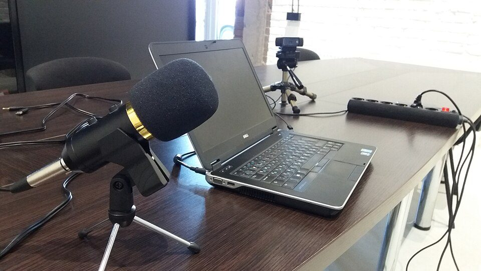
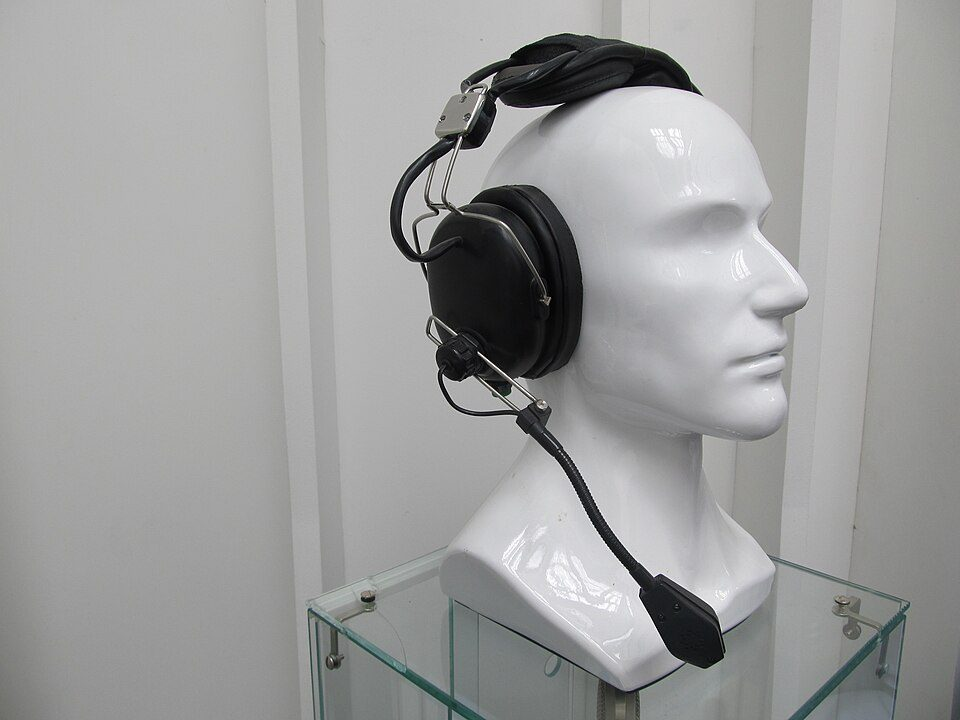
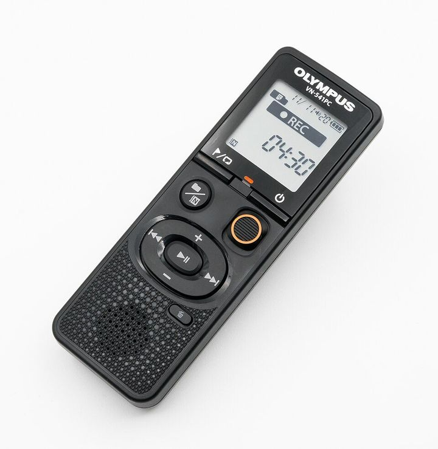

オンライン英会話を録音してAIで復習する方法：自分と相手の声を録る道具、文字起こし、AIでの添削、研究にもとづく復習のしかた（2026年版）
要点まとめ
オンライン英会話のレッスンを録音しておくと、自分が実際にどう言ったか、どこで言葉に詰まったかを、あとから確かめられます。この記事では、レッスンを録音し、文字に起こし、AIに添削・解説してもらい、単語帳や音読で復習して、次のレッスンで使う、という流れを、自分のパソコンやスマホで組む方法をまとめました。録音の手順は Microsoft・Apple・Google などの公式のヘルプ、録音の可否は各社が公開している規約、学習法は論文の要旨で確かめた範囲で書いています。英会話サービスの選び方や料金は扱いません。

全体の流れ：録音から次のレッスンまで
見方: 1〜5を、レッスンのたびにくり返します。図の道具は例で、条件は3〜5章の表にまとめています。この順番と道具の組み合わせは筆者の整理で、流れ全体の効果を1つの研究で確かめたものではありません。それぞれの段の根拠は6章で紹介します。
まず、サービスの録画・文字起こしを確かめる
サービス側で録画し、復習用に渡しているところもある
Cambly は、各レッスンを、復習と品質管理のために録画しているとしています（グループレッスンの動画は今は提供していない）。録画は自分でダウンロードして復習でき[6]、料金のページでは、Pro プランの機能に毎回のレッスンの録画と文字起こしを挙げています[7]。EF English Live は、レッスンに入るときに録画を有効にしておくと、有効な契約がある間、グループレッスンは音声を、プライベートレッスンは動画を最長1年見られるとしています[8]。使い方はEF English Live の記事で紹介しています。Bizmates は、自社の MyStage に録画・単語帳の機能があると案内しています[9]。
筆者の提案: サービスの録画が使えるなら、まずそれを使うのが、規約の面でも手間の面でも確実です。使えないときに、3章の方法で自分で録ります。
録る前に確かめること：規約・講師・個人情報
レッスンを自分で録音してよいかは、サービスによって違います。調べた範囲の規約・ヘルプの記述は次のとおりです。表にないサービスも、録る前に、使っているサービスの規約で録音・録画の扱いを確かめてください。
| サービス | 会員の録音・録画、サービスの録画 | 公開・共有 |
|---|---|---|
| レアジョブ英会話 | 会員の禁止事項に「レッスン内容を録音または録画する行為」がある[1] | 会社が開示した録音は自分の学習だけに使い、SNS などに出さない[1] |
| ネイティブキャンプ | 調べた規約（禁止行為の条）に、録音そのものを禁じる文は見当たらなかった。録音してよいとも書かれていない。著作権の条は、会社のコンテンツ等を承諾なく複製するなど、サービス利用の目的を超えた行為を禁じている[10] | レッスンの内容・画像・動画・音声を、会社に無断で公開する行為を禁止[10] |
| Cambly | 会社が各レッスンを録画（グループレッスンの動画は今は提供なし）。録画はダウンロードして復習できる[6] | YouTube などへの公開は、講師の明示の許可が必要[6] |
| EF English Live | 入室時に録画を有効にすると、会社の録画を最長1年見られる[8] | 今回は確かめていない |
| DMM英会話・Bizmates | 規約を確かめられなかった | 規約を確かめられなかった |
講師にも一言確かめる（筆者の提案）
規約で禁じていなくても、録る前に講師に聞く
録音には講師の声も入ります。Cambly の行動規範は、レッスンの動画をどこかに共有する前に、必ず講師に許可を求めるよう求めています[11]。Google の Gemini Live のヘルプも、ほかの人を会話に加えたり録音したりする前に、許可を得るよう求めています[12]。Microsoft Teams のヘルプは、地域によっては、録画する前に全員の許可が必要な場合があるとしています[13]。
筆者の提案として、規約で禁じていないサービスでも、最初のレッスンで「復習のために録音してよいか」を講師に確かめておくと安心です。
録音は、自分の復習だけに使う
調べた3社は、どれも無断の公開を認めていない
レアジョブは SNS などへの無断の発信を、ネイティブキャンプは無断の公開を禁じ、Cambly は公開に講師の明示の許可を求めています[1][10][6]。録音ファイルや文字起こしは、人に渡したり SNS に載せたりしないのが基本です（筆者の見解）。
講師の声も、個人を特定できる情報になりうる
名前の入った録音は、個人情報の例に挙げられている
個人情報保護委員会のガイドライン（通則編。事業者に向けた解説）は、個人情報の例として、本人の氏名が含まれるなどの理由で「特定の個人を識別できる音声録音情報」を挙げています[14]。同委員会は一般の利用者に向けても、生成AIに入れた個人情報が機械学習に使われることがあり、応答に不正確な内容が含まれることがあると注意し、事業者の利用規約やプライバシーポリシーを確かめるよう呼びかけています[4]。
筆者の提案として、AIに渡す文字起こしからは、講師の名前や、講師と自分の個人的な話（住んでいる所、勤め先など）を消してから渡します。
自分と相手の両方の声を録る方法（OS・ソフト別）
録音でつまずきやすいのは、相手の声です。ヘッドホンやイヤホンで聞いていると、講師の声はマイクに入りません。自分の声は「マイク」、相手の声は「PCの音（システムオーディオ）」として、両方を録る設定にします。
スピーカーで聞けば相手の声もマイクに入りますが、Apple は、QuickTime Player で画面収録しながら音を確かめるときにハウリング（音が回り込んで響くこと）が起きる場合は、音量を下げるか、マイク付きのヘッドフォンを使うよう案内しています[3]。

| 環境・道具 | 区分 | 自分の声 | 相手の声（PCの音） | 対応・手順の要点 |
|---|---|---|---|---|
| Windows 11：Snipping Tool の画面録画 | 標準の機能 | マイク（任意）[2] | PCの音（任意）[2] | ［録画］→［新規］、または Windows ロゴ キー＋Shift＋R[15]。音声の機能は2023年8月31日に Insider 向けに発表[2] |
| Windows：Audacity | 無料（GPLv3）[16] | このページに記載なし | WASAPI の「(loopback)」入力で録る[17] | 公式マニュアルが、PCの再生音を録る推奨の方法としている[17] |
| Windows・Mac：OBS Studio | 無料（GPL v2）[18] | 映像と音声を取り込み、混ぜて録る機能がある[19] | Windows 10・11、macOS 13.0 以降[19] | |
| Mac：スクリーンショット（shift＋command＋5） | 標準の機能 | 「オプション」でマイクを選ぶ[3] | macOS 27 以降は「システムオーディオを含める」を選ぶ[3] | Apple の案内（2026年9月22日公開）[3] |
| Mac：QuickTime Player | 標準の機能 | マイクを選ぶ[3] | 手順にはマイクの記述しかない[3] | ハウリングするときはマイク付きのヘッドフォンを[3] |
| Mac：Audio Hijack | 有料（69ドル）[20] | マイクなどの入力機器[21] | アプリの音、システム全体の音[21] | 4.6.1（2026年11月18日）は macOS 14.4〜27 に対応[21] |
| iPhone・iPad：画面収録 | 標準の機能 | 録画ボタンを長押しし、マイクをオン[22] | ページに明記なし。録音・録画を許可しないアプリがある[22] | コントロールセンターから始める[22] |
| Android：スクリーン レコード | 標準の機能 | 開始前に音声を録るか選ぶ[23]。Pixel は［マイク録音］[24] | Pixel は［デバイスの音声を録音］[24] | Pixel 以外の機種の表示は確かめていない |
Windows：Snipping Tool と Audacity
Snipping Tool は、PCの音とマイクを選んで録れる
Windows 11 の Snipping Tool は、画面の切り取りに加えて画面録画ができ、［録画］→［新規］か、Windows ロゴ キー＋Shift＋R で始めます[15]。画面録画は2022年12月8日に Windows Insider（開発中の版を試す人向けの制度）向けに配り始め[25]、PCの音とマイクの声を任意で録る機能は、2023年8月31日に Insider 向けに発表されました[2]。
Mac：画面収録と Audio Hijack
システムの音は、macOS 27 以降で「含める」を選ぶ
Mac では shift＋command＋5 でスクリーンショットアプリを開き、「オプション」でマイクを選ぶと自分の声を録れます。macOS 27 以降では、「システムオーディオを含める」を選ぶとシステムの音も録れると、Apple は2026年9月22日公開のページで案内しています[3]。QuickTime Player の手順には、マイクを選ぶ記述しかありません[3]。
有料の録音ソフト Audio Hijack（Rogue Amoeba）は、Mac で動くアプリの音やシステム全体の音、マイクなどの入力機器の音を録れると説明しています[21]。価格は1ライセンス69ドルで、全機能を試せる試用版があります[20]。
iPhone・Android：画面録画で録る
録画を始める前に、マイク（音声）をオンにする
iPhone・iPad は、コントロールセンターの録画ボタンを長押しし、マイクボタンをオンにすると、音声付きで録画できます。ただし、一部のアプリでは録音やビデオの録画が許可されていない場合があるとしています[22]。Android は、画面上部からのスワイプで出る「スクリーン レコード」で、開始する前に音声を録音するかどうかを選べます[23]。Pixel のヘルプには、スクリーン レコードのメニューで［デバイスの音声を録音］［マイク録音］をオンにする手順があります[24]。

会議ツールの録画は、受講者が使えるとは限らない
主催者の権限や契約がないと録れないことがある
レッスンが Microsoft Teams や Google Meet で行われる場合、会議ツールの録画機能を受講者が自由に使えるとは限りません。Teams では、ゲストは会議を録画できず、録画を始めると参加者全員に自動で通知されます[13]。個人向けの Teams 無料版では、録画は Microsoft 365 Personal・Family・Premium の契約者が使える機能です[27]。Google Meet では、参加者が録画できるのは主催者に録画権限がある場合だけで、録画は主催者の Google ドライブに保存されます[28]。
無料のソフトを入れるとき
OBS Studio と Audacity は、無料・オープンソース
OBS Studio は、映像と音声をその場で取り込んで混ぜられる、無料・オープンソースの録画・配信ソフトで、Windows 10・11と macOS 13.0 以降に対応しています[19]。ライセンスは GNU GPL v2 です[18]。Audacity は GPLv3 で公開されています[16]。公式の配布元から入れるなど、安全な入れ方はオープンソースのソフトの記事にまとめています。
文字起こし：道具と、誤りへの注意
録音を文字にすると、自分の発言を目で見直せて、AIにも渡しやすくなります。主な道具の条件は次のとおりです。
| 道具 | 料金・条件 | 英語 | 上限 | 話者の区別 | 処理する場所 |
|---|---|---|---|---|---|
| Word のトランスクリプト | Microsoft 365 のサブスクリプション[29] | 対応（80以上のロケール。日本語も）[29] | アップロードした音声は月300分まで[29] | あり（Speaker 1、Speaker 2 など）[29] | 音声は OneDrive に保存される[29] |
| iPhone のボイスメモ | iPhone の機能（iPhone 12以降）[30] | 対応（英語はすべてのバリアント）[30] | 確かめていない | 確かめていない | 確かめていない |
| Pixel のレコーダー | Pixel の機能 | 対応（機種で対応言語が違う）[31] | 確かめていない | Pixel 6 以降、英語のみ[32] | 話者の声のモデルは端末に一時保存。再文字起こしは Google のサーバーのことがある[32][31] |
| Whisper（OpenAI） | 無料（MIT ライセンス）[33] | 英語専用のモデルがある[33] | 上限の記載なし。必要な VRAM は約1〜10GB[33] | README に記載なし | 自分のパソコンに入れて動かす[33] |
| Gemini Notebook（Google） | 無料の場合はソース50個まで[34] | 対応（日本語も）[34] | 1ソース200MB・50万語まで[34] | 確かめていない | 読み込むときに文字起こしし、テキストを保存[34] |
Word のトランスクリプト
話者を分け、音声を聞き直しながら文字を直せる
Word のトランスクリプトは、話者ごとに区切って音声を文字にし、タイムスタンプの付いた音声を再生しながら、文字起こしを編集して直せる機能です[29]。Microsoft 365 のサブスクリプションがあれば、アップロードした音声を月300分まで文字にできます[29]。対応する形式は .wav・.mp4・.m4a・.mp3 です[29]。
スマホで文字にする
iPhone は12以降、Pixel の話者分けは英語のみ
iPhone のボイスメモは、iPhone 12以降で、英語（すべてのバリアント）や日本語などの文字起こしに対応しています。一部の国や地域では使えません[30]。Pixel のレコーダーは、Pixel 6以降で話者を自動で見分けて「話し手 1」「話し手 2」とラベルを付けますが、この機能は英語のみです[32]。ラベルを付けるための声のモデルは、端末に一時的に保存され、数分以内に削除されるとしています[32]。
外に出したくないときは、自分のパソコンで
Whisper は、自分のパソコンで動かす無料の文字起こし
OpenAI の Whisper は、音声認識のモデル（AIの本体）で、コードとモデルが MIT ライセンスで公開されています[33]。自分のパソコンに入れて動かすので、録音をネットに上げずに文字にできます（筆者の整理）。6つの大きさがあり、うち4つに英語専用版があります。英語だけなら、英語専用版の方がよい傾向（特に tiny.en・base.en）で、既定の turbo も英語の書き起こしに向くとしています[33]。
使うには、Python と ffmpeg（音声を扱うコマンドの道具）を入れる必要があります[33]。VRAM は、画像処理用の部品（GPU）が使うメモリです。AIによる添削まで自分のパソコンで行う方法は、ローカルLLMの記事で紹介しています。
文字起こしは、自分の発言を聞き直して直す
文字起こしの誤りは、自分で直す前提で使う
Word のヘルプは、話者のラベルやセクションの内容を編集して、文字起こしの問題を直せるとしています[29]。Gemini Notebook のヘルプは、音声の品質が低いと読み込みに失敗することがあるとしています[34]。筆者の提案として、AIに渡す前に、少なくとも自分の発言は音声を聞き直して直しておきます。6章で紹介する研究でも、学習者が自分で書き起こす手順が使われています[5]。
AIに添削・解説してもらう
AIには、録音の音声をそのまま読み込ませる方法と、文字起こしした文章を渡す方法があります。読み込める量と、渡したデータの扱いは、サービスによって違います。
| AI | 音声ファイル | 学習への利用 | 保存期間 |
|---|---|---|---|
| Gemini アプリ（Google） | 合計10分まで（Google AI Pro・Ultra は3時間）[35] | 「Gemini の履歴」をオフにすると、フィードバックを送らない限り、以降のチャットは学習に使わない[36] | 自動削除は既定で18か月。オフでも約2か月保存。人がレビューしたものは最長3年[36] |
| Gemini Notebook（Google） | 読み込むときに文字起こし[34] | フィードバックをしない限り、トレーニングに使わない[37] | 確かめていない |
| Microsoft Copilot | 確かめていない | 「Training on conversation activity」などをオフにすると、以降の会話を学習に使わない[38] | 会話は既定で18か月。共有したファイルは18か月以内に自動削除[39] |
| Claude（Anthropic） | 対応形式の一覧は文書と画像で、音声の記載なし[40] | 学習に使うかは利用者が選ぶ（2025年8月28日発表）[41] | 許可すると最長5年（匿名化した形）。許可しないと30日[42][41] |
| ChatGPT（OpenAI） | 今回は、公式のページを確認できなかった | ||
長い音声は、文字にしてから渡す
Gemini アプリに読み込める音声は、合計10分まで
Gemini アプリは、1回のプロンプト（AIへの指示）にファイルを最大10個まで付けられ、動画以外は1ファイル100MBまでです。音声は合計10分までで、Google AI Pro・Ultra では合計3時間までになります[35]。Gemini Notebook は、音声ファイルを読み込むときに文字起こしし、1つのソースは200MB・50万語まで、無料の場合はソースを50個まで入れられます[34]。Gemini Notebook は、Google が2026年7月16日に NotebookLM から改称すると発表したサービスです[43]。Claude は、アップロードできる形式の一覧が文書と画像で、音声の記載はありません[40]。
筆者の見解: 10分を超える録音や、音声を読み込めないAIには、文字起こしのテキストを渡すのが確実です。
| ねらい | 指示文の例 |
|---|---|
| 自分の誤りを直す | 「次はオンライン英会話の文字起こしです。Speaker 1 が私（学習者）、Speaker 2 が講師です。私の発言だけについて、文法や語の使い方の誤りを直し、直した理由を日本語で短く説明してください。」 |
| 自然な言い換え | 「私の発言のうち、意味は通じるが不自然なものを選び、より自然な言い方を2つずつ示してください。くだけた言い方か、丁寧な言い方かも書いてください。」 |
| 言えなかったこと | 「私が言葉に詰まった所や、日本語で言った所について、言いたかった内容を英語でどう言えばよいか、短い文で示してください。」 |
| 知らなかった語句の表 | 「講師が使った表現のうち、私が知らなかったと思われるものを10個選び、英語・意味・例文の3列を、タブで区切った表にしてください。」 |
| 次のレッスンで使う表現 | 「この会話の話題で、次のレッスンで私が使えそうな表現を5つと、講師にする質問を3つ出してください。」 |
タブで区切った表は、単語帳アプリの Anki に取り込めます。Anki は、カンマ・セミコロン・タブで区切った文字のファイル（UTF-8）を読み込めます[44]。
AIの直しは、うのみにしない
個人情報保護委員会は、生成AIの応答に不正確な内容が含まれることがあると注意しています[4]。筆者の提案として、文字起こしの誤りにAIの誤りが重なることもあるので、AIの直しで迷ったものは、次のレッスンで講師に確かめます。書き起こしを使った授業の研究でも、語彙（語の選び方）では教員の役割が大きいとされています[45]。
復習のしかたと研究の根拠
レッスンの後の復習の手順の例です。時間の目安は筆者の提案で、研究で決められた数字ではありません。
- 直後（5分）
録音を保存し、言えなかったことを3つメモする
言いたかった内容を、日本語のままでよいので書いておく
- 当日（20分）
文字に起こし、自分の発言を聞き直して直す
自分で書き起こす手順は、研究でも使われている[5]
- 当日〜翌日（15分）
AIに、誤りの訂正・言い換え・語句の表を頼む
講師の名前などは消して渡す。迷う直しは講師に確かめる
- 翌日から
語句を単語帳に入れ、間隔をあけて思い出すテストをする
- 毎日（5〜10分）
直した文を、音読・シャドーイングする
- 次のレッスンの前
使う表現を3つ選び、レッスンで使って、また録音する
図の1に戻る
自分の発話を書き起こして直す
学術英語の授業で、正確さを保ちやすかったという報告
学術英語（EAP）を学ぶ大人の学習者が、ペアで自分たちの発話を書き起こし、話し合って直し、さらに教員が直して話し合う活動の報告では、こうした書き起こしと編集が、比較的自然な形で言葉の形（文法など）に注意を向けさせうると示唆されました。語彙では、教員の役割が大きいことも示されています[45]。
同じ著者の別の研究は、EAPの2クラスで、学習者が自分で書き起こしたものを使う方法と、教員が書き起こした抜粋を使う方法を比べました。2日後と4週間後に同じ課題をしたところ、自分で書き起こした方が、取り上げた言葉の形の正確さを保ちやすかったと示唆されています[5]。
思い出すテストをする（想起練習）
覚えた後は、読み返すより思い出すテストが効いた
大学生が外国語の単語を覚える研究では、いったん覚えた後に単語をくり返し学習しても、後日に思い出せる量に効果はありませんでしたが、くり返しテストをすると大きな効果があったと報告しています。学生は、自分の成績を正しく予測できていませんでした[46]。
間隔をあけてくり返す（分散学習）
長く覚えておきたいほど、間隔を長めにとる
言葉を思い出す課題での分散学習（間隔をあけた学習）を調べたメタ分析（多くの研究をまとめて分析する方法）は、184の論文・317の実験から839の評価を集めました。長く覚えておきたい期間ほど、最もよく覚えられる学習の間隔も長くなる、という結果でした[47]。
単語帳アプリの Anki は、難しいカードに時間をかけ、覚えているカードにかける時間を減らせると説明しています。復習のタイミングも変えられます[51]。
音読・シャドーイング
聞き取りの力が伸びたという研究がある
シャドーイングは、聞こえた英語を少し遅れて声に出してまねる練習です。初めて見る教材を使った42日間のシャドーイングの取り組みでは、聞き取り（知覚）の得点は有意に（統計的に偶然とはいいにくい形で）上がる傾向があった一方、まね（模倣）の得点は変わりませんでした。参加の回数が多いほど、Versant（英語の話す力などを測るテスト）の発音と語彙の得点が上がることと関連していました[48]。
国立大学の1年生47名が、さまざまな英語話者のインタビューを教材に8回の授業を受けた研究では、シャドーイングの訓練はリスニング力を育てるのに有効だったと報告しています[49]。
くわしく
- 42日間の取り組みでは、手本を3回シャドーイングし、文字を見ながらのシャドーイングと音読も行った[48]
- 録音した講師の発話を、シャドーイングの教材にも使える（筆者の提案）
単語帳アプリ Anki
パソコン版と Android 版は無料、iOS 版は¥4,000
Anki のパソコン版は無料で、Windows 10以降や macOS 13以降などで使え、AnkiWeb の同期も無料です[51]。Android の AnkiDroid は無料で、有志が開発しています[51]。iPhone・iPad 向けの公式アプリ AnkiMobile は、App Store で¥4,000でした（2026年11月19日閲覧。税込みかどうかの記載はページになし）[52]。カードには音声や画像も使えます[51]。
話す力を試験で確かめたい人は、TOEIC Speaking Test の記事も参考にしてください。
2025〜2026年の新しい動き
- 2025年8月28日
Anthropic が、Claude の Free・Pro・Max プランで、会話を学習に使うかを利用者が選ぶ形にすると発表
許可すると保存は5年。既存の利用者の期限は2025年10月8日[41]
- 2026年7月16日
Google が NotebookLM を「Gemini Notebook」に改称すると発表
単体の製品のまま、Gemini アプリの中などでも使えるようにする[43]
- 2026年9月22日
Apple が「Macで画面を収録する方法」を公開
macOS 27 以降で、システムオーディオも録音できると案内[3]
- 2026年11月17日
Google が Gemini アプリのプライバシー ハブを更新
5章の表は、この版で確かめた[36]
- 2026年11月18日
Audio Hijack 4.6.1 が公開
macOS 14.4〜macOS 27 に対応[21]
Windows の Snipping Tool の音声つき録画は、それより前の2023年8月31日に、Insider 向けに発表されたものです（3章）[2]。
今回確認できなかった点
- Snipping Tool の音声つき録画が、一般の Windows 11 に届いた日（公式には Insider 向けの日付のみ）
- Pixel 以外の Android 機種での、音声の選択肢の表示
- Audacity で、マイクとPCの音を同時に1つのファイルに録る手順
- Audio Hijack を日本で買うときの、税込みの価格
- DMM英会話・Bizmates の規約での、会員の録音の扱い（規約のページを読めなかった）
- レッスンの会話や教材を録音し、AIに読み込ませることが、著作権法30条の「私的使用のための複製」に当たるか（公的な解説を読めなかった）[53]
- ChatGPT の音声ファイルの読み込みとデータの扱い、Copilot に音声ファイルを読み込めるか
- iPhone のボイスメモの話者の区別と処理する場所、個人向けの Microsoft 365 で Word のトランスクリプトを使えるか
- 研究の参加者の人数（要旨にないもの）と、効果の大きさ
- 文字起こしやAIの誤りの割合を示す、公的な数字
出典（53件）
閲覧日はいずれも2026年11月19日
- レアジョブ英会話 利用規約（株式会社レアジョブ）
- New Updates for Snipping Tool and Notepad for Windows Insiders（2023年8月31日）（Microsoft（Windows Insider Blog））
- Macで画面を収録する方法（2026年9月22日公開）（Apple）
- 生成AIサービスの利用に関する注意喚起等（令和5年6月2日、PDF）（個人情報保護委員会）
- Learning from the transcripts of an oral communication task（Lynch T（ELT Journal 61巻4号、2007年））
- Lesson video FAQ（Cambly）
- Pricing（Cambly）
- Subscription terms（EF English Live）
- Skype から Microsoft Teams への移行ガイド（2025年3月、PDF）（Bizmates）
- ネイティブキャンプ 利用規約（株式会社ネイティブキャンプ）
- Cambly Code of Conduct（Cambly）
- Gemini Live で自然に会話する（Gemini アプリ ヘルプ）（Google）
- Record a meeting in Microsoft Teams（Microsoft）
- 個人情報の保護に関する法律についてのガイドライン（通則編）（令和8年6月一部改正）（個人情報保護委員会）
- Snipping Tool を使ってスクリーンショットをキャプチャする（Microsoft）
- License（Audacity）
- Tutorial - Recording Computer Playback on Windows（Audacity Manual）（Audacity）
- COPYING（OBS Studio のライセンス）（OBS Project（GitHub））
- OBS Studio（公式サイト）（OBS Project）
- Press Kit（Rogue Amoeba）
- Audio Hijack（Rogue Amoeba）
- iPhone、iPad、iPod touchで画面を録画する（2026年9月25日公開）（Apple）
- Android デバイスで画面の画像（スクリーンショット）または動画を撮影する（Android ヘルプ）（Google）
- Google Pixel の画面を録画する（Google Pixel ヘルプ）（Google）
- Screen recording in Snipping Tool begins rolling out to Windows Insiders（2022年12月8日）（Microsoft（Windows Insider Blog））
- The Rogue Amoeba Store（Rogue Amoeba）
- Manage meeting and call recordings in Microsoft Teams Free（Microsoft）
- ビデオ会議を録画する（Google Meet ヘルプ）（Google）
- レコーディングの文字起こし（Word のトランスクリプト）（Microsoft）
- iPhoneでボイスメモの文字起こしを表示する（iPhone ユーザガイド）（Apple）
- Create, edit & manage transcriptions（Pixel Phone Help）（Google）
- 録音内でスピーカー ラベルを使用する（Google Pixel 6 以降）（Google）
- openai/whisper（README）（OpenAI（GitHub））
- ノートブックの新しいソースを追加または検索する（Gemini Notebook）（Google）
- Gemini アプリでファイルをアップロードして分析する（Google）
- Gemini アプリのプライバシー ハブ（2026年11月17日更新）（Google）
- Gemini Notebook の詳細（Google）
- Microsoft Copilot privacy controls（Microsoft）
- Privacy FAQ for Microsoft Copilot（Microsoft）
- Upload files to Claude（2026年7月23日）（Anthropic）
- Updates to Consumer Terms and Privacy Policy（2025年8月28日）（Anthropic）
- How long do you store my data?（Anthropic）
- NotebookLM is now Gemini Notebook（2026年7月16日）（Google（The Keyword））
- Anki Manual: Text Files（Anki）
- Seeing what they meant: transcribing as a route to noticing（Lynch T（ELT Journal 55巻2号、2001年））
- The Critical Importance of Retrieval for Learning（Karpicke JD・Roediger HL（Science、2008年。PubMed））
- Distributed practice in verbal recall tasks: A review and quantitative synthesis（Cepeda NJ ほか（Psychological Bulletin、2006年。PubMed））
- 未習パッセージを用いた英語シャドーイングの効果 ―リスニング力およびスピーキング力との関係―（2022年）（外国語教育メディア学会（J-STAGE））
- 英語の多様性を取り入れたシャドーイング訓練の実験的研究（2012年）（日本メディア英語学会（J-STAGE））
- Students transcribing tasks: noticing fluency, accuracy, and complexity（Stillwell C ほか（ELT Journal 64巻4号、2010年））
- Anki（公式サイト）（Anki）
- AnkiMobile Flashcards（Apple（App Store））
- 著作権法（e-Gov法令検索）
写真・画像の出典（5件）
- ノートパソコンと、机に置いたマイク・ウェブカメラ
写真: Антон Пищулин／Wikimedia Commons（CC BY-SA 4.0） - マイクの付いたヘッドセット（展示品）
写真: Niklitov／Wikimedia Commons（CC BY-SA 4.0） - ICレコーダー（デジタルの録音機）
写真: Jacek Halicki／Wikimedia Commons（CC BY-SA 4.0） - パソコンの机に置いたヘッドホンとスマートフォン
写真: Oliur Rahman（ultralinx）／Wikimedia Commons（CC0） - 英語を学ぶ人向けの英英辞典（1982年の版）
写真: Victor Korniyenko／Wikimedia Commons（CC BY-SA 3.0）